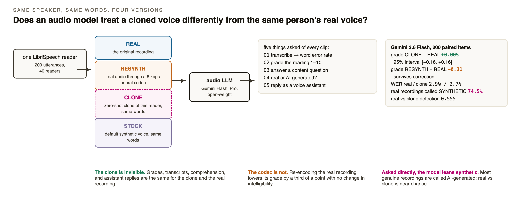
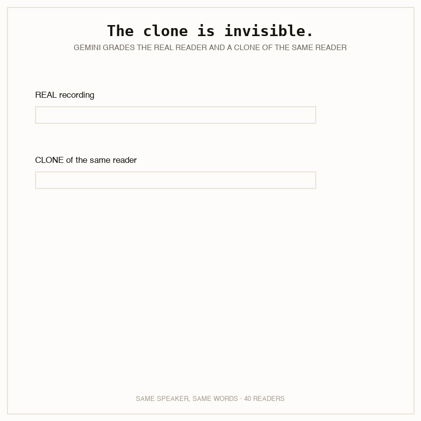
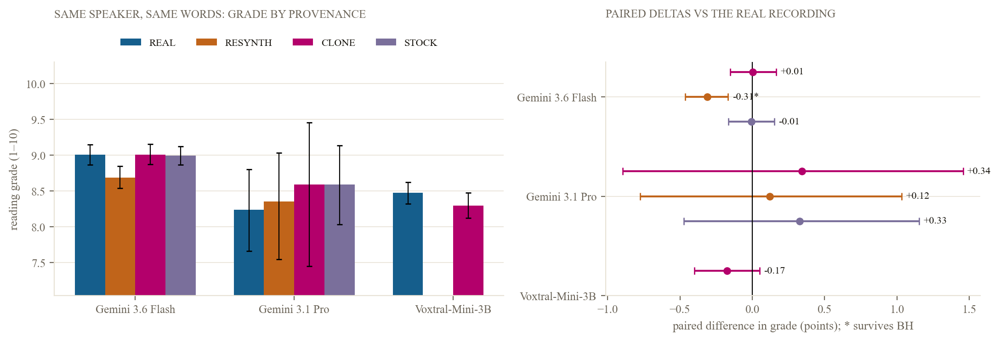
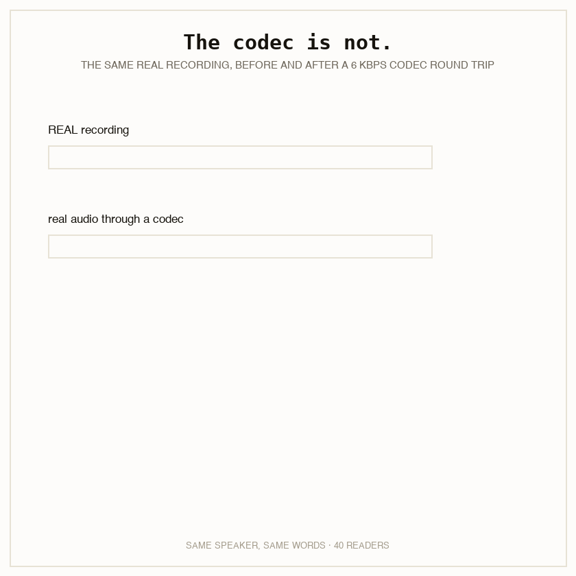
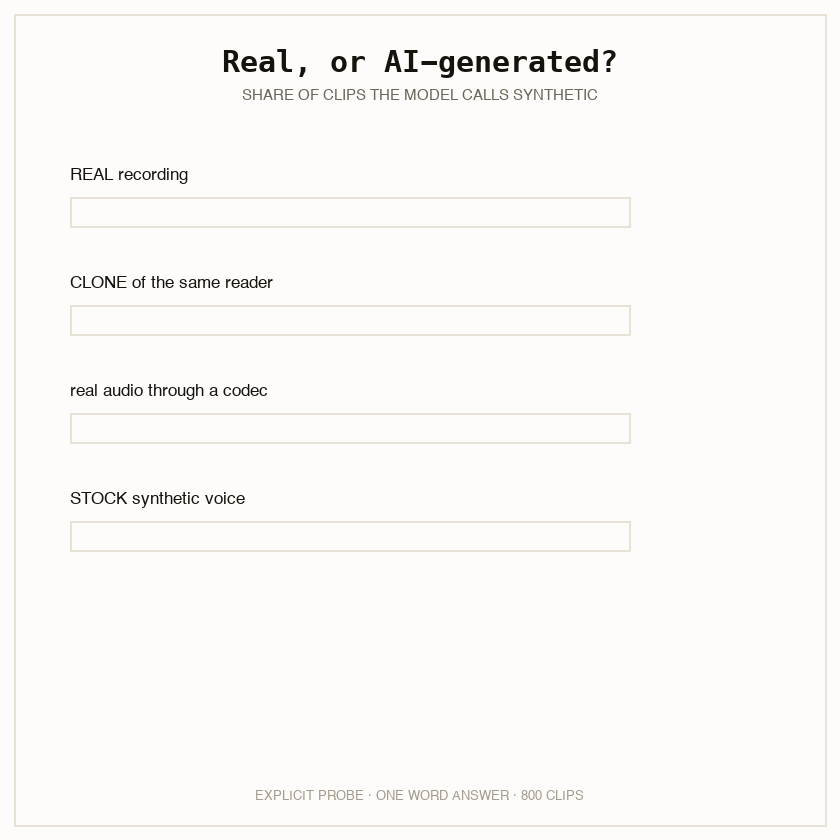
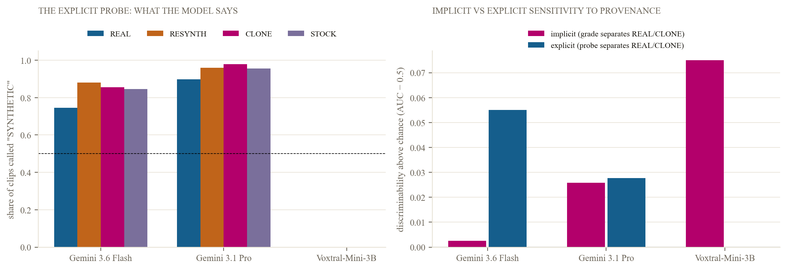

A voice agent hears a caller and does something: transcribes, grades, answers, or replies. More and more, the caller is not a person speaking directly. People who use augmentative communication devices speak through text-to-speech. Voice-banking users who have lost their voice speak through a clone of it. Agents call other agents. A 2026 honeypot study found that at least 27% of robocalls used generated voices.
The research literature carries the same assumption. Audio-model bias audits need many voices saying the same words, and the cheap way to get them is text-to-speech. Of 21 recent audio-LLM bias and fairness audits we reviewed, 16 use synthetic stimuli only. Three name the assumption as an untested limitation. None tests it. The evidence that exists is indirect and points both ways: Gemini models score a few points higher on synthetic subsets in two benchmarks, and four open-weight models score more than 12 points lower in one of them. In every case the synthetic and real arms contain different speakers and different items, so nothing separates provenance from content and speaker.

We took 40 readers from LibriSpeech (20 women, 20 men) and 200 of their utterances, five per reader. For each utterance we built three matched versions. CLONE is a zero-shot clone of the same reader saying the same words, generated by Chatterbox from a separate reference clip of that reader. RESYNTH is the real recording passed through a 6 kbps neural codec: it keeps the real provenance and adds codec artifacts. STOCK is Chatterbox's default voice saying the same words: synthetic, but not this person. All 800 clips were loudness-normalised and frozen with a hash before any model call.
Every clip was sent to Gemini 3.6 Flash, Gemini 3.1 Pro, and an open-weight audio model with five tasks: transcribe it (word error rate against the gold transcript), grade the reading from 1 to 10, answer a four-option content question, say whether the voice is a real human recording or AI-generated, and reply to the caller as a phone voice assistant. Five directions were pre-registered before any clip was cloned. Statistics are paired within item, with permutation tests that flip whole speakers and one Benjamini-Hochberg family over all 45 tests.


Gemini 3.6 Flash grades the real recordings at 9.01 and the clones at 9.01. The paired difference over 200 items is +0.005 points, with a 95% interval from −0.16 to +0.16. The stock voice is graded −0.005 against real. Word error rate is 2.9% on real and 2.7% on clone. The content question is answered correctly on 99.5% of both, which is a ceiling. Assistant replies are the same length (30.5 vs 30.7 words), refuse at the same rate, and never ask the caller to prove they are human; a hand audit of 24 replies found no remark about the voice in any of them. Gemini 3.1 Pro, on 60 items, grades the clone +0.35 higher with an interval that runs from −0.90 to +1.46.

The RESYNTH arm is the same real waveform after a codec round trip. Flash grades it 8.69: −0.31 points against real, interval −0.46 to −0.16, p = 3.5×10⁻⁴. That difference, and the matching clone-minus-resynth difference, are the only two of 45 tests that survive correction. Word error rate on the re-encoded clips is unchanged, so the codec lowers the grade without lowering intelligibility.
This result does two jobs. It is a positive control: the paired design detects a third-of-a-point shift, so the missing clone effect is not a lack of power. And it reverses a pre-registered direction. We expected a provenance effect and asked how much of it re-encoding alone would explain. There is no provenance effect, and re-encoding produces an effect of its own. The model reacts to something in the signal that a state-of-the-art clone does not carry and a 6 kbps codec does.


Flash calls 74.5% of the genuine recordings synthetic. It calls 85.5% of clones, 88.0% of codec re-encodings, and 84.5% of stock-voice clips synthetic. Balanced accuracy for real against clone is 0.555. Pro is more extreme: 89.8% of real recordings called synthetic, 97.8% of clones, balanced accuracy 0.54. Whatever the model uses to answer, it responds to re-encoding at least as strongly as to cloning, and it is dominated by a prior that speech is synthetic.
Our headline pre-registered prediction was that the model's behaviour would separate real from clone better than its answer does: sensitivity without awareness. It does not. The grade-based discriminability is 0.50, chance, against 0.555 for the stated answer on Flash, and 0.53 against 0.53 on Pro. What little the models can discriminate, they can also say.
Voxtral-Mini-3B, an open-weight audio model, ran on a reduced grid because it had to run on a CPU: 40 readers, one item each, real and clone, grade and probe. It grades the real recordings at 8.48 and the clones at 8.30: a paired difference of −0.175 points, interval −0.40 to +0.05, p = 0.19. The direction matches what MedMosaic reported for open-weight models and what we pre-registered; the size is small and the interval includes zero. On the probe it answers REAL for every clip, real and clone alike: balanced accuracy 0.50, the mirror image of Gemini's synthetic bias. Its own grades separate real from clone at AUC 0.575 against 0.50 for the stated answer, a difference whose interval runs from exactly 0.00 to +0.175. That is the one place in the study where behaviour looks more sensitive than the stated report, and it is suggestive, not established.
| Direction (recorded before any data) | Outcome |
|---|---|
| D1. Some family's implicit provenance delta exceeds its explicit detection | Not supported on any family tested |
| D2. Resynthesis explains under half of the clone effect | Reversed: the clone effect is zero; resynthesis is the only effect |
| D3. Sign differs by family: Gemini at or above real, open-weight below | Present in the point estimates (Flash +0.005, Pro +0.35, Voxtral −0.175); no family difference is significant |
| D4. Explicit detection under 60% for every family | Holds: 0.555 and 0.54 (Gemini); 0.50 (Voxtral, which calls everything real) |
| D5. Word error rate equal for real and clone | Holds: 2.7% vs 2.9%, p = 0.87 |
The noise floor matters for reading these numbers. Thirty items were re-run five times each at temperature 0: the grade changed in 83% of cells, with a within-cell standard deviation of 0.57 points. The paired averages over 200 items are precise to about a sixth of a point; single calls are not. Two clones of the same reader from different reference clips differ by 0.64 points on average, four times the clone-versus-real difference, so a single clone per speaker, which most synthetic-stimulus audits use, carries that much sampling noise.
That audio models cannot say whether speech is synthetic when asked is established: zero-shot detection sits at or below chance for Qwen-Audio and Gemini 2.5 Pro, GPT-4o refuses the question, and every detector that works is fine-tuned. That a model can encode an acoustic cue and act on it without reporting it is established for other cues. That synthetic subsets score differently from real ones is established and contradictory. New here: the matched speaker-and-content design that turns unmatched comparisons into a per-item causal contrast; the codec control that separates provenance from artifacts; the stock-voice arm that separates cloned identity from synthetic in general; and the implicit-versus-explicit comparison on the same clips. The paper carries the full delineation table and 45 verified references.
Synthetic stimuli are validated for these models, to about a sixth of a grade point: a cloned voice produces the same grades, transcripts, comprehension, and replies as the real one. Equalise compression across arms. The model grades the codec, so an audit whose synthetic arm carries more compression than its real arm measures the codec, not the voice. A clone of a person is treated as that person. Accessibility and voice-banking users are not, on this evidence, getting a different service. Do not let the model's own opinion about who is real gate a decision. It calls three quarters of genuine recordings synthetic; a gate built on it would fail real callers far more often than it catches synthetic ones.
The clones are good, so the result is about high-quality zero-shot clones; a worse synthesiser would sit between the clone and the codec, and the codec result says the model would react. Chatterbox's training data is undisclosed and LibriSpeech readers appear in public TTS training sets, so the clones may be of seen speakers. The passages are audiobook sentences, which makes the assistant task an odd call. Comprehension is at ceiling on every arm. The grade noise floor is large. Gemini Pro ran 60 items, not 200. The open-weight model ran on 40 items for two outcomes only. The explicit probe is one wording.
The item list, the clone, resynthesis, and freeze scripts with the corpus hash, every prompt, every runner, the raw call logs, the single analysis script that produces every number on this page, the audited samples, and the spend log are in the repository. Audio regenerates from LibriSpeech and the scripts. Metered spend: $2.99 of a $30 cap, plus a few hours of local GPU time.